Комплект подготовлен для нового приложения. Перед отправкой на проверку нужно разместить политику по публичному HTTPS-адресу и заполнить анкету возрастного рейтинга в Console. Аудитория: 13–15, 16–17 и 18+.
Обложка · 1024 × 500
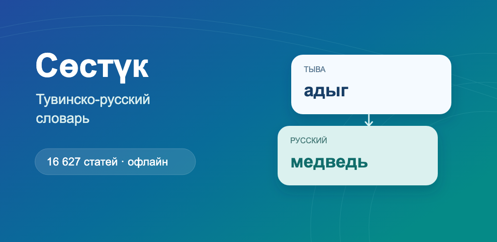
Телефон · 7 экранов · 1080 × 1920
Реальные экраны приложения с короткими заголовками. Нажмите на изображение, чтобы открыть его полностью.
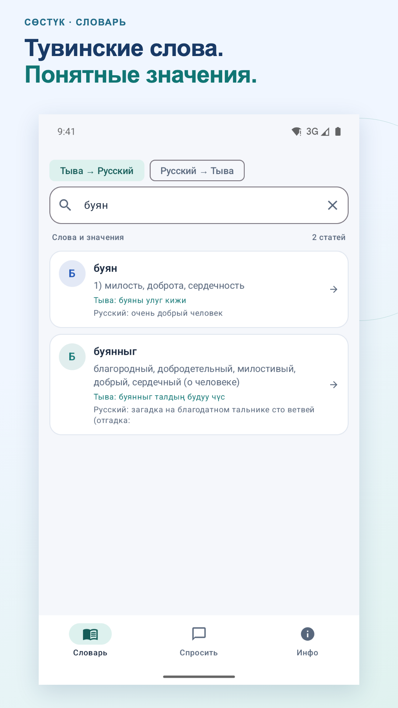
01-tuvan-search.pngПоиск тувинского слова «буян»: значения и примеры с русским переводом.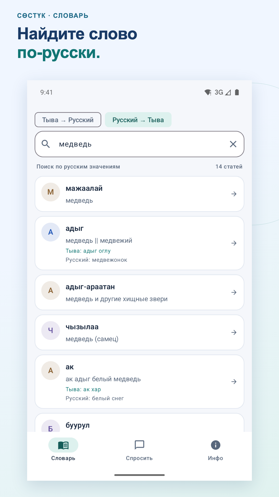
02-russian-search.pngПоиск по русскому слову «медведь»: тувинские варианты из словаря.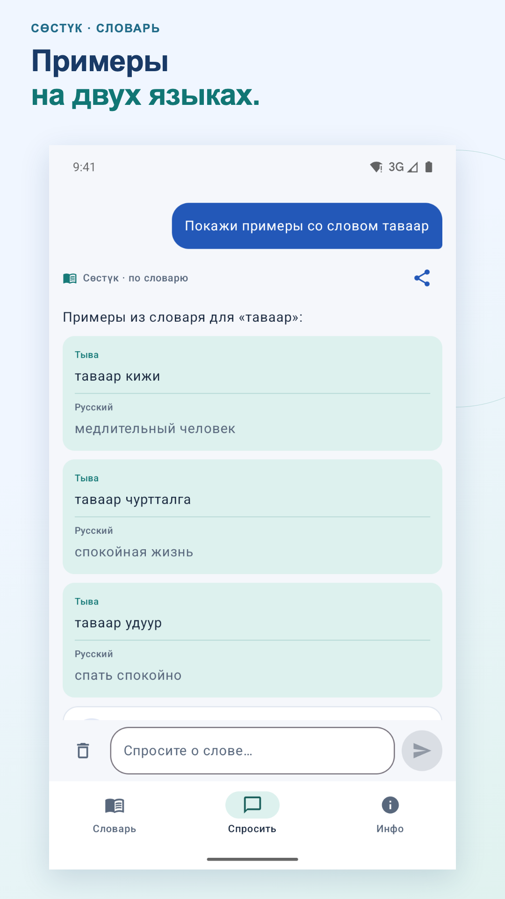
03-examples.pngПримеры со словом «таваар»: тувинские фразы и русский перевод разделены и подписаны.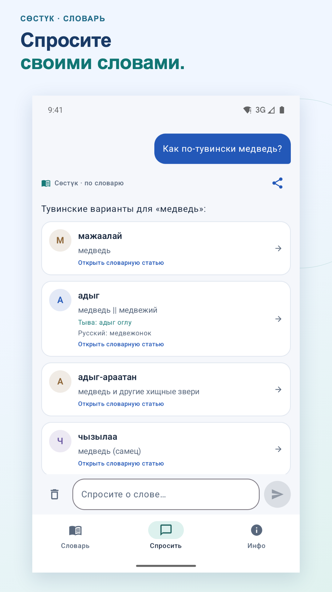
04-question.pngВопрос «Как по-тувински медведь?» и ответы из словарных статей.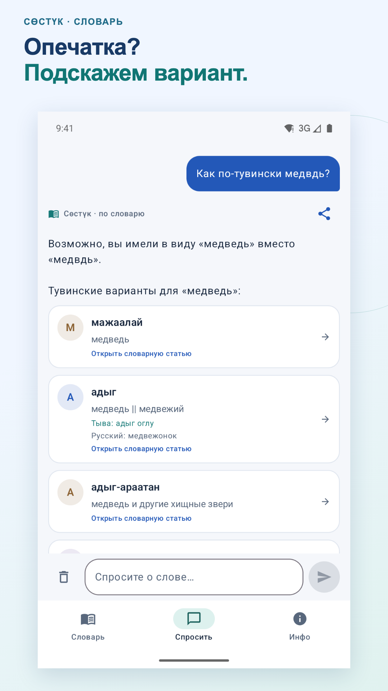
05-typo.pngПодсказка для опечатки «медвдь» и тувинские варианты слова «медведь».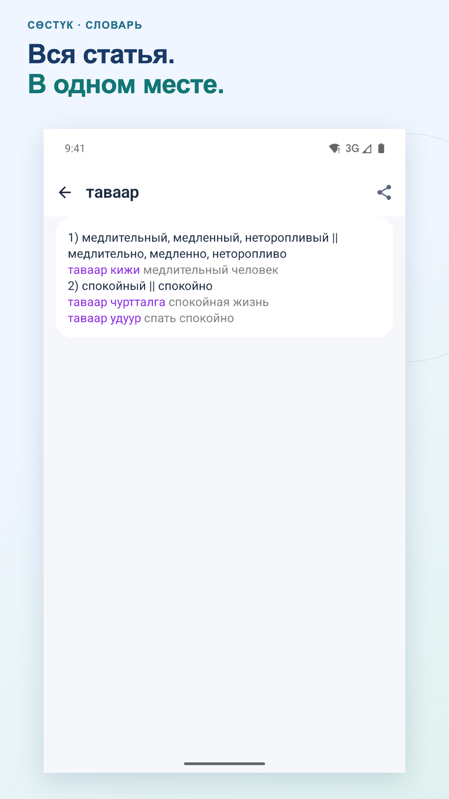
06-article.pngПолная статья «таваар» с двумя значениями, примерами и кнопкой «Поделиться».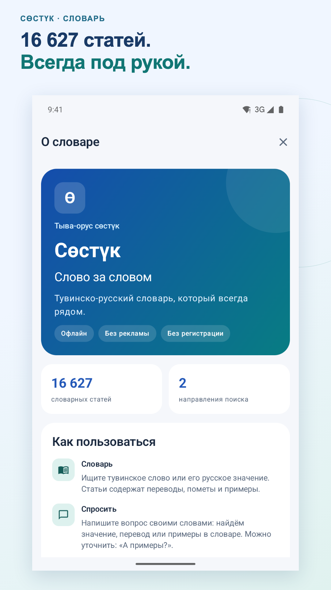
07-info.pngРаздел «Инфо»: описание словаря, количество статей и поиск в двух направлениях.Планшет · 4 экрана · 1920 × 1080
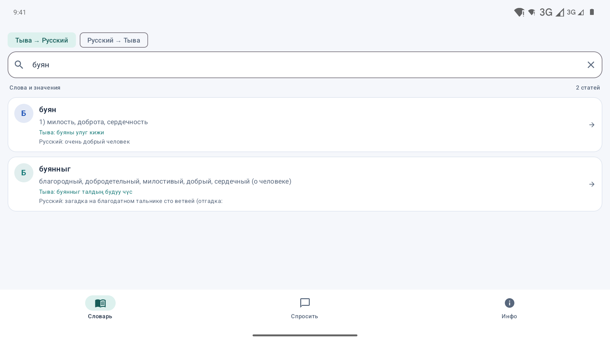
01-tuvan-search.pngПоиск тувинского слова «буян»: значения и примеры с русским переводом.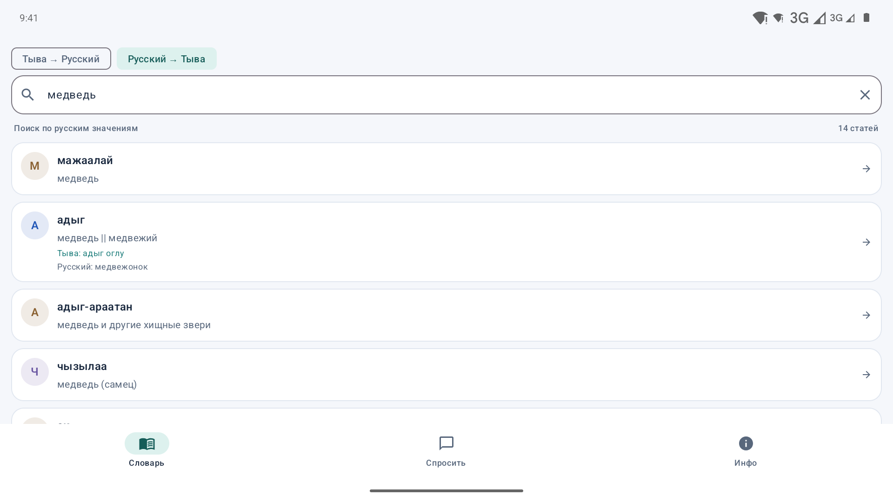
02-russian-search.pngПоиск по русскому слову «медведь»: тувинские варианты из словаря.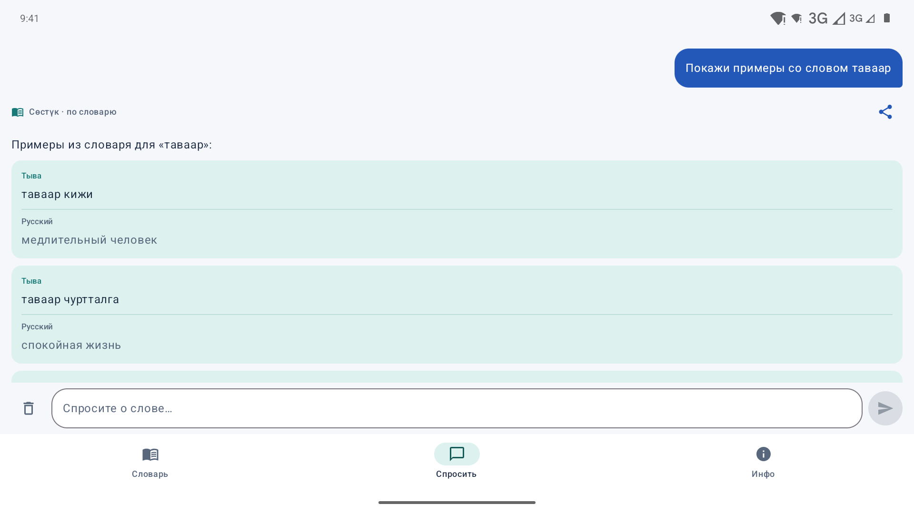
03-examples.pngПримеры со словом «таваар»: тувинские фразы и русский перевод разделены и подписаны.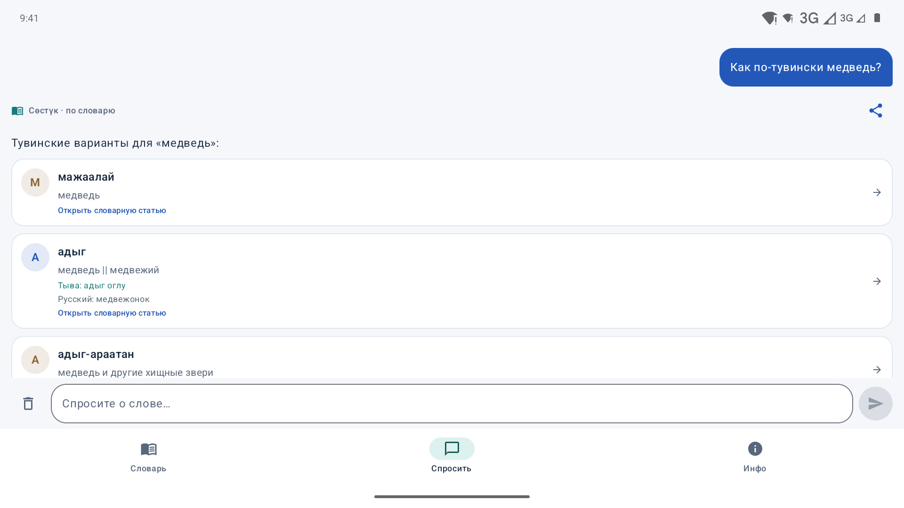
04-question.pngВопрос «Как по-тувински медведь?» и ответы из словарных статей.Тексты карточки
Название
Тыва-орус сөстүк
Краткое описание
Тувинско-русский словарь офлайн: значения, примеры и поиск в обе стороны
Полное описание
Сөстүк — тувинско-русский словарь для тех, кто изучает тувинский язык, читает на нём или хочет точнее понимать знакомые слова.
16 627 словарных статей всегда под рукой. Значения и примеры доступны без интернета, регистрации и рекламы.
ПОИСК В ОБЕ СТОРОНЫ
Ищите тувинское слово или переключитесь на поиск по русским значениям. Словарь помогает найти нужную статью и предлагает варианты при опечатках.
ЗНАЧЕНИЯ И ЖИВЫЕ ПРИМЕРЫ
Открывайте полную статью с сохранённым форматированием. В карточках примеров тувинская фраза и русский перевод разделены и подписаны: «Тыва» и «Русский».
СПРОСИТЕ О СЛОВЕ
«Как по-тувински медведь?», «Что означает таваар?» или «Покажи примеры со словом таваар». Раздел «Спросить» распознаёт распространённые вопросы и находит ответы в словаре. Можно уточнить: «А примеры?».
Ответы основаны на словарных статьях. Приложение не сочиняет переводы произвольных предложений и не заменяет полноценный переводчик.
ДЕЛИТЕСЬ НАХОДКАМИ
Отправляйте статью или ответ через кнопку «Поделиться». Текст содержит заголовки, значения и удобно разделённые примеры на двух языках.
ОФЛАЙН И БЕЗ ЛИШНЕГО
Поиск и вопросы обрабатываются на устройстве. Нет учётной записи, рекламных модулей и аналитики. При желании можно открыть выбранный текст во внешнем Google Переводчике: это отдельный онлайн-сервис, который получает текст только по вашему нажатию.
Подходит подросткам от 13 лет и взрослым: для учёбы, чтения и повседневного знакомства с языком.
Обратная связь: agisight@gmail.com
Описание выпуска
Тувинско-русский словарь с 16 627 статьями работает офлайн.
Поиск в обе стороны и подсказки при опечатках.
Вопросы о словах и примеры из словаря.
Тувинские фразы и русские переводы разделены и подписаны.
Статьями и ответами можно делиться.
Раздел «Инфо» содержит справку и сведения о конфиденциальности.
Подпись AAB проверена. При проверке сборки ранее прошли 34 инструментальных теста. Ключи и пароли в комплект не входят.